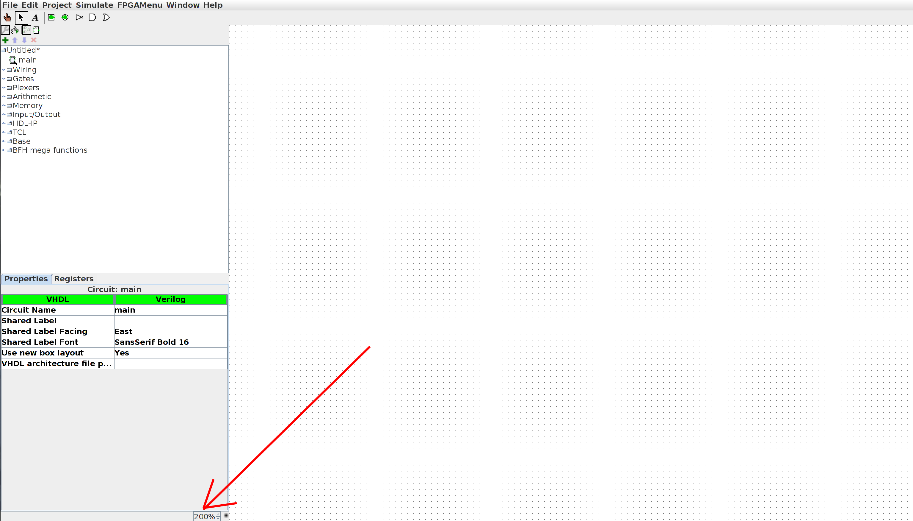
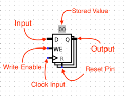
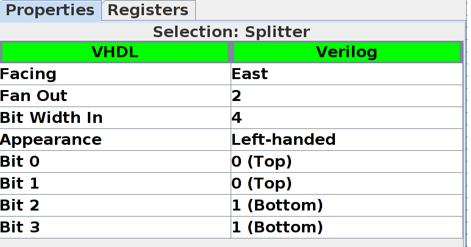
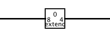

Lab 5
Deadline: Checkoff between Wednesday, October 7 to Friday, October 9.
IMPORTANT: Do not move staff-provided input and output pins. This will break the testing framework and harness. If your circuit doesn’t pass the tests and you think it is correct, ensure your circuit fits in the corresponding harness in testing/circ_files/exX_test.circ.
Objectives
- TSWBAT practice designing and debugging basic digital logic circuits in Logisim
- TSW gain more experience designing and debugging circuits with both combinational logic and stateful elements
- TSW gain experience designing FSMs and implementing them as digital logic
Setup
Pull the Lab 5 files from the lab starter repository with
git pull starter master
All the work in this lab will be done from the digital logic simulation program Logisim Evolution, which is included in the lab starter files.
IMPORTANT: Please use the .jar file we’ve given you, not the version of Logisim that is downloaded on the lab computers! And a note: Logisim does not save your work as you go along, and it does not automatically create a new .circ file when you open it! Save when you start, and save frequently as you work.
You can open Logism via:
java -jar logisim-evolution.jar
IMPORTANT: Logism is a Java program that requires a GUI, so doing the lab over terminal won’t work (without window forwarding, detailed below). If you wish to work on the lab locally, ensure you have Java installed on your local machine, and pull the latest lab starter files to your local machine. Then, you should open the program as above. If you wish to run the program over the terminal, you will need to add the -X flag to your SSH command to enable window forwarding (for example, ssh -X [email protected]). On Windows machines, you may need to additionally install Xming. On OSX, you may need to install XQuartz.
Introduction Video
For this lab, we created an optional intro video! This video covers the introduction to logisim features described in exercises 0 to 3, so you can skip some of the introductory text in those sections if you watch it. You still have to do the action items in exercises 1 to 5 though!
Introduction
Part 0: Warm Up
We’ll begin by creating a very simple circuit just to get the feel for placing gates and wires. Before you start, take note of a useful feature: the zoom function! It’s in the bottom left corner, and will make your life much easier for the next couple weeks.

-
 Start by clicking the
Start by clicking the ANDgate button. This will cause the shadow of anANDgate to follow your cursor around. Click once within the main schematic window to place anANDgate. -
Click the
Input Pinbutton. Now, place two input pins somewhere to the left of yourANDgate. -
Click the
Output Pinbutton. Then place an output pin somewhere to the right of yourANDgate. Your schematic should look something like this at this point:
-
 Click the
Click the Select toolbutton. Click and drag to connect the input pins to the left side of theANDgate. This will take several steps, as you can only draw vertical and horizontal wires. Just draw a wire horizontally, release the mouse button, then click and drag starting from the end of the wire to continue vertically. You can attach the wire to any pin on theANDgate on the left side. Repeat the same procedure to connect the output of theANDGate (right side) to the output pin. After completing these steps your schematic should look roughly like this:
-
Finally, click the
Poketool and try clicking on the input pins in your schematic. Observe what happens. Does this match with what you think anANDGate should do? Note that poking the wires themselves tells you the current value on that wire; this will be very useful later when you build more complex circuits.
Part 1: Sub-Circuits
Just as C programs can contain helper functions, a schematic can contain subcircuits. In this part of the lab, we will create several subcircuits to demonstrate their use.
IMPORTANT NOTE: Logisim Evolution guidlines say you cannot name a subcircuit after a keyword (e.g. NAND), also circuit names must start with “A-Za-z”, so no numbers.
Action Item
Follow the steps below and show your final circuit to your TA at checkoff (remember to save!):
Do not move staff-provided input and output pins. This will break the testing framework and harness. If your circuit doesn’t pass the tests and you think it is correct, ensure your circuit fits in the testing harness in testing/circ_files/ex1_test.circ.
-
Open up the Exercise 1 schematic (
File->Open->ex1.circ). -
Open up the NAND1 empty subcircuit by double clicking on the name
NAND1in the circuit selector in the left menu. (note the1at the end; because there is a component calledNAND, we cannot call itNAND).
- In the new schematic window that you see create a simple
NANDcircuit with the 2 input pins on the left side and the output pin on the right side. Do this without using the built-inNANDgate from the Gates folder (i.e. only use theAND,OR, andNOTgates provided next to the selection tool icon). You can change the labels for the inputs and output by selecting the input/output using the select tool and changing the propertyLabelin the bottom left of the window.
- Repeat these steps to create several more subcircuits:
NOR,XOR,2-to-1 MUX, and4-to-1 MUXin the given skeletons. Please do not change the names of the subcircuits or create new ones; do you work in the respectively named circuit or else the autograder will not work properly. Do not use any built-in gates other thanAND,OR, andNOT. Once you’ve built a subcircuit, you may (and are encouraged to) use it to build others. You can do this by clicking and placing your created subcircuit like you would any other component. Note: for the4-to-1 MUX,Sel0andSel1correspond to the 0th and 1st bits of the 2-bit selector, respectively. Hint: Try writing a truth table. You might also find the lecture slides useful for a refresher on how to build these. You may want to consider using some of your custom subcircuits when designing the others.
Checkpoint
At this point, make sure that you are comfortable with the Logisim environment, creating sub-circuits, and re-using such circuits in other circuits.
Part 2: Storing State
Let’s implement a circuit that increments a value ad infinitum. The difference between this circuit and the circuits you’ve built for lab so far is that it will store this value in the state of a register.
Action Item
The following steps will show you how to add registers to your circuit. Complete the steps and show the final circuit to your TA (remember to save!):
Do not move staff-provided input and output pins. This will break the testing framework and harness. If your circuit doesn’t pass the tests and you think it is correct, ensure your circuit fits in the testing harness in testing/circ_files/ex2_test.circ.
-
Open up the Exercise 2 schematic (
File->Open->ex2.circ) and go to the empty AddMachine circuit. -
Load in the
ArithmeticLibrary if it is not already loaded (go toProject->Load Library->BuiltinLibraryand selectArithmetic). This library contains elements that will perform basic mathematical operations. When you load the library, the circuit browser at left will have a newArithmeticfolder.
-
Select the adder subcircuit from the
Arithmeticlibrary and place the adder into yourAddMachinesubcircuit. -
Load in the
MemoryLibrary if it is not already loaded (go toProject->Load Library->BuiltinLibraryand selectMemory). This library contains memory elements used to keep state in a circuit. A newMemoryfolder will appear in the circuit browser. -
Select the register from the
Memoryfolder and place one register into your subcircuit. Below is an image diagraming the parts of a register.
-
Connect a
clockto your register. You can find the clock circuit element in theWiringfolder in the circuit browser. - Connect the output of the adder to the input of the register, and the output of the register to the input of the adder.
- You may get a “Incompatible widths” error when you try to connect components. This means that your wire is trying to connect two pins together with different bit widths. If you click on the adder with the
Selectiontool, you will notice that there is aData Bit Widthproperty in the bottom left field of the window. This value determines the number of bits each input and output the adder has. Change this field to8and the “Incompatible widths” error should be resolved.
- You may get a “Incompatible widths” error when you try to connect components. This means that your wire is trying to connect two pins together with different bit widths. If you click on the adder with the
-
Wire an 8-bit constant
1to the second input of the adder. You can find theConstantcircuit element in theWiringlibrary. -
Connect the two output pins to your circuit so that you may monitor what comes out of the adder and the register. The output of the adder should be connected to
ADD_OUTand the output of the register toREG_OUT. Thus, by the end, your circuit should look like as follows:
-
Now start running your circuit by going to
Simulate->Ticks Enabled(orCommand/Control + K). Your circuit should now be outputting a counter in binary form. -
If you want to run your circuit faster, you can change the tick frequency in
Simulate->Tick Frequency.
Checkpoint
At this point, make sure that you are comfortable with designing and simulating simple digital logic circuits in Logisim environment that use a mix of combinational logic and state elements (registers).
Part 3: FSMs to Digital Logic
Now we’re ready to do something really cool: translate a FSM into a digital logic circuit.
For those of you who need a reminder, FSM stands for Finite State Machine. FSM’s keep track of inputs given, moves between states based on these inputs, and outputs something everytime something is input.
We use a register to store the state of the FSM we’re currently in, and combinational logic to map FSM input & current register state to FSM output & next register state.
Action Item
Load the given starter file ex3.circ into Logism. Modify this circuit’s subcircuits StateBitZero and StateBitOne to implement the following FSM:
If two ones in a row or two zeroes in a row have ever been seen, output zeros forever. Otherwise, output a one.
Do not move staff-provided input and output pins. This will break the testing framework and harness. If your circuit doesn’t pass the tests and you think it is correct, ensure your circuit fits in the testing harness in testing/circ_files/ex3_test.circ.
Show this completed circuit to your TA (remember to save!)
-
Note that the FSM is implemented by the following diagram (the four state names
00,01,10,11are just names written in binary - they have no direct relationship with the actual zeros and ones of the FSM input/output). Take some time to understand how this diagram implements the FSM: -
Observe that the following is a truth table for the FSM (convince yourself of this):
st1 st0 input next st1 next st0 output 0 0 0 0 1 1 0 0 1 1 0 1 0 1 0 1 1 0 0 1 1 1 0 1 1 0 0 0 1 1 1 0 1 1 1 0 1 1 0 1 1 0 1 1 1 1 1 0 -
We’ve provided you with a starter Logisim circuit to start out in
ex3.circ. -
Note that the top level of the circuit looks almost exactly the same as our previous adder circuit, but now there’s a
FSMLogicblock instead of an adder block.FSMLogicis the combinational logic block for this FSM. We have handled the output bit for you, as it’s the most complicated to simplify and implement. You should complete the circuit by completing theStateBitOneandStateBitZerosubcircuits, which produces the next state bits.
Checkpoint
At this point, you should have more familiarity with designing and implementing FSMs, and the close relationship between FSMs and digital logic.
Advanced Logisim
Setup
Feel free to do each part as separate sub-circuits in the same Logisim file.
The following parts will introduce you to more advanced techniques/concepts in Logisim.
Advanced Features
Here are three Logisim features that should both save you a lot of time and make your circuits look much cleaner.
Splitters
Splitters allow you to take a multi-bit value and split it up into smaller parts, or (despite the name) combine multiple values that are one or more bits into a single value. Here, we split the 4-bit binary number 1001 into 10 and 01, then recombine it with 11 into the final 5-bit number 111001:

Click on a splitter to get its menu in the sidebar. You can use this menu to determine the number of arms on your splitter and how many bits should go on each arm. For the circuit above, the left splitter’s menu looks like this:

While the right splitter’s menu looks like this:

Notice that there’s an option called facing. You can use this to rotate your splitter. Above, see that the splitter on the right is facing West while the splitter on the left is facing East.
If you see an error wire that is orange, this means that your bit width in does not match your bit width out. Make sure that if you’re connecting two components with a wire, you correctly set the bit width in that component’s menu.

Tunnels
A tunnel allows you draw an “invisible wire” to bind two points together. Tunnels are grouped by case-sensitive labels give to a wire. They are used to connect wires like so:

Which has an effect such as the following:

Some care should be taken as to which wires are connected with tunnels to which other wires, such as in this case:

Which in turn has the following effect:

We strongly recommend you use tunnels with Logisim, because they make your circuits much cleaner looking, and therefore easier to debug.
Extenders
When changing the width of a wire, you should use a bit extender for clarity. For example, consider the following implementation of extending an 8-bit wire into a 16-bit wire:

Whereas the following is much simpler, easier to read, and less error-prone:

Additionally consider the case of throwing out bits. In this example, an 8-bit wire is being converted into a 4-bit wire by throwing out the other bits:

Despite the implications of its name, a bit extender can also do this same operation:

Part 4: Practice with Splitters
We’re going to construct a circuit that manipulates an 8-bit number.
Action Item
Complete the following steps to create the splitter circuit, and show this to your TA (remember to save). When you’ve completed the circuit, answer the question in step 11.
Do not move staff-provided input and output pins. This will break the testing framework and harness. If your circuit doesn’t pass the tests and you think it is correct, ensure your circuit fits in the testing harness in testing/circ_files/ex4_test.circ.
- Open up the Exercise 4 schematic (
File->Open->ex4.circ) and go to the empty Split circuit.
-
Go to the
Wiringfolder and select theSplittercircuit. This circuit will take a wire and split it into a set of wires of smaller width. Conversely, it can also take many sets of wires and combine them into one. -
Change the
Bit Width Inproperty (bus width) to8, andFan Outproperty (# of branches) to3. Your splitter should now look as follows:
-
Now, select which bits to send out to which part of your fan. The least significant bit is bit
0and the most significant bit is bit7. Bit0should come out on fan arm0, bits1,2,3,4,5and6should come out on fan arm1, and bit7should come out on fan arm2. FYI: theNoneoption means that the selected bit will not come out on ANY of the fan arms. -
Route
In1to the splitter. Attach a 2-inputANDgate to fan arms0and2and route the output of theANDgate toOut1. -
Now, interpret the input as a “sign and magnitude” number. Place logic gates and other circuits to prepare
Out2to be the negative “sign and magnitude” value of the input. Sign and magnitude is an alternate way of representing signed values - like 2’s Complement, but simpler! The combinational logic should be straight-forward. -
We will need another splitter to recombine the fans into a single 8-bit bus. Place another splitter with the proper properties (Bit Width In: 8, Fan Out: 3, correct fan widths). Play with the
FacingandAppearanceproperties to make your final circuit as clean-looking as possible. At this point,Out2should be the negation of the input (interpreting the input as a “sign and magnitude” value). -
Answer the following question:
If we decide to take the input and interpret it as a 2’s Complement number, what inputs will produce
Out1 = 1? Hint: What do the first and last bits of a 2’s Complement number being 1 tell you about the number?
Part 5: Rotate Right
With your knowledge of splitters and your knowledge and experience with multiplexers, you are ready to implement a non-trivial combinational logic block: rotr, which stands for “Rotate Right”. The idea is that rotr A,B will “rotate” the bit pattern of input A to the right by B bits. So, if A were 0b1011010101110011 and B were 0b0101 (5 in decimal), the output of the block would be 0b1001110110101011. Notice that the rightmost 5 bits were rotated off the right end of the value and back onto the left end. In RTL, the operation would be something like R = A >> B | A << (16 - B).
Action Item
Implement a subcircuit named rotr with the following inputs:
A(16-bit), the 16-bit input to be rotatedB(4-bit), the rotation amount (why 4 bits?) You can find the starter subcircuit inex5.circ.
Do not move staff-provided input and output pins. This will break the testing framework and harness. If your circuit doesn’t pass the tests and you think it is correct, ensure your circuit fits in the testing harness in testing/circ_files/ex5_test.circ.
The output should be A rotated right by B bit positions, as outlined above. You are NOT allowed to use Logisim shifters in your solution, though all other combinational logic (MUXes, constants, gates, adders, etc.) is allowed. Logisim’s built-in MUXes (find them under the Plexers menu) might be especialy helpful. Your solution shouldn’t involve a clock or any clocked elements, like registers.
Hint 1: Before you start wiring, you should think very carefully about how you might decompose this problem into smaller ones and join them together. You should feel very free to use subcircuits when implementing rotr. If you don’t, expect to regret it.
Hint 2: Just because we gave you an RTL representation doesn’t mean it’s the best way to look at this problem. Think about the input bits of B and think about how to effectively use splitters! Can you do something with the binary form? Remember why binary is good for use in computers: a 1 is easy to represent as an ON signal, and a 0 is easy to represent as an OFF signal. Let’s say we want to rotate 9 times. 9 is 1001 in binary, or 1*8 + 0*4 + 0*2 + 1*1. Can you use this to make a cleaner circuit? Making use of the rot* circuits we have provided is a good idea that will keep things clean!
Testing
To test, run the testing script via:
./test.sh
Since Logisim will be running in one terminal window already, make sure to open up a new window to run the testing script. If it says you don’t have permission, run:
chmod +x test.sh
This script will copy your circuits into a testing harness, run your circuits on different inputs, and compare your results to ours. Therefore, please do not touch anything in the testing folder unless a TA instructs you to do so. However, you are more than welcome to check out the circuitry involved in testing your code as you will encounter it again when working on Project 3.
Checkoff
Please submit to the Lab Autograder assignment (same as last week!).
Show your working 2-to-1 MUX, 4-to-1 MUX, AddMachine, StateBitZero, StateBitOne, Split, and rotr circuits to your TA. Be ready to explain how they work.